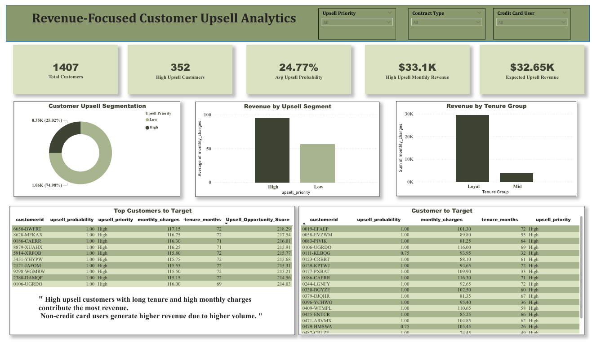
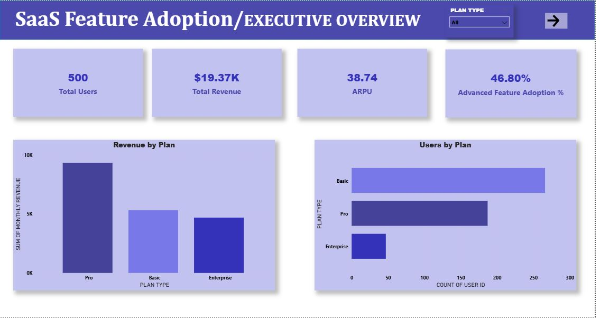

My Projects

Telecom Customer Churn Prediction & Profit Optimization
Built an end-to-end churn analytics solution using Machine Learning and Power BI. Predicted high-risk customers, optimized recall using threshold tuning, and applied profit-based decision logic to identify retention targets.
View on GitHub
Revenue-Focused Customer Upsell Analytics
Built an end-to-end revenue-driven analytics project to identify customers with high upsell potential using Python, SQL, Decision Trees, and Power BI dashboards.
View on GitHub
SaaS Upsell Analytics Project
Analyzed SaaS user behavior, feature adoption, and subscription data using SQL, clustering models, and Power BI dashboards to identify upgrade opportunities.
View on GitHub
US Air Quality Index Analysis
In-depth analysis of US air quality trends (1980–2022) using data visualization and statistical insights to identify regional and seasonal patterns.
View on GitHub
Adidas Sales Analysis Dashboard
Developed a dynamic Power BI dashboard analyzing Adidas sales (2020–2021), highlighting regional performance, product trends, and top retailers.
View on GitHub
Flood Assessment Using Remote Sensing (FYP)
Assessed flood destruction in Larkana, Sukkur, and Shikarpur using satellite data, Google Earth Engine, and a .NET Blazor visualization system.
View on GitHub